Getting started
General Information
Thank you for purchasing our theme. We are happy that you are one of our customers and we assure you won't be disappointed. We do our best to produce top notch themes with great functionality, premium designs and human readable code. Before you get started we highly encourage you to get familiar with this documentation file. Spending half an hour reading the manual may save a lot of your time and avoid questions with obvious answers.
If you have any questions that are beyond the scope of this help file, feel free to post them on our support forum at https://axiom.ticksy.com/.
PLEASE NOTE!
Our support covers getting setup, troubles with using any of the features and any bug fixes.
Unfortunately, we cannot provide support for customizations or 3rd party plugins. If you need help
with customizations of your theme, then you should enlist the help of a developer.
HTML Structure
Customizer panel
Files responsible for the output, styles and settings of the Customizer panel can be found here:
root directory.../custom_tools/js/front.customizer.js
root directory.../custom_tools/js/skin.customizer.js
root directory.../custom_tools/css/front.customizer.css
The lines below are responsible for Customizer panel functioning. It can be found in your index.html file. It can also be added to any file you want your Customizer panel to appear.
<script type='text/javascript' src='custom_tools/js/skin.customizer.js'></script>
<script type='text/javascript' src='custom_tools/js/front.customizer.js'></script>
IMPORTANT: Changes made via Customizer panel will be active until you refresh the page. To save the changes you'd need to edit the source files. Such "on-the-go" customization functionality was made for a demonstration purposes only.
Background Images
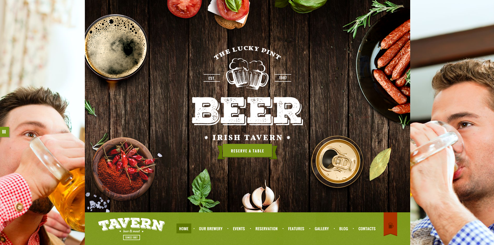
To change the background image add one of the classes (choose any figure from 1 to 3 for the bg_image_ attribute) below into the <body> tag:
<body class="home page article_style_stretch top_panel_style_dark top_panel_opacity_solid top_panel_below menu_right sidebar_hide bg_color_1 bg_image_1 body_style_boxed">
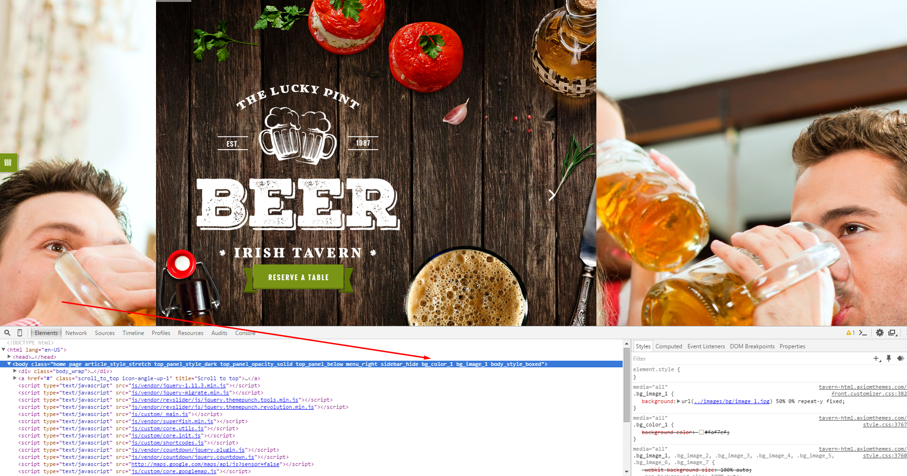Body styles and Color settings can be changed in the same way.
IMPORTANT: To see the image in higher resolution right click on it and choose "Open image in new tab" option in the context menu.
To edit basic Tavern color scheme you need to edit styles in the style.css file and the rest of the .css related ones.
Widgets sidebar
This is how the standard widgets sidebar looks like.
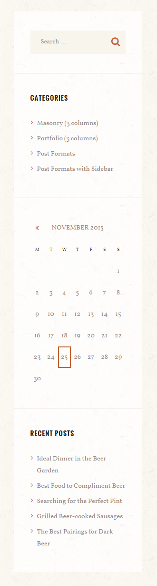
<div class="sidebar widget_area bg_tint_light sidebar_style_light" role="complementary">
...
</div>
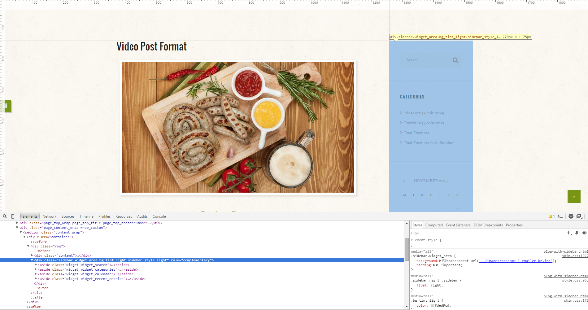
Typography
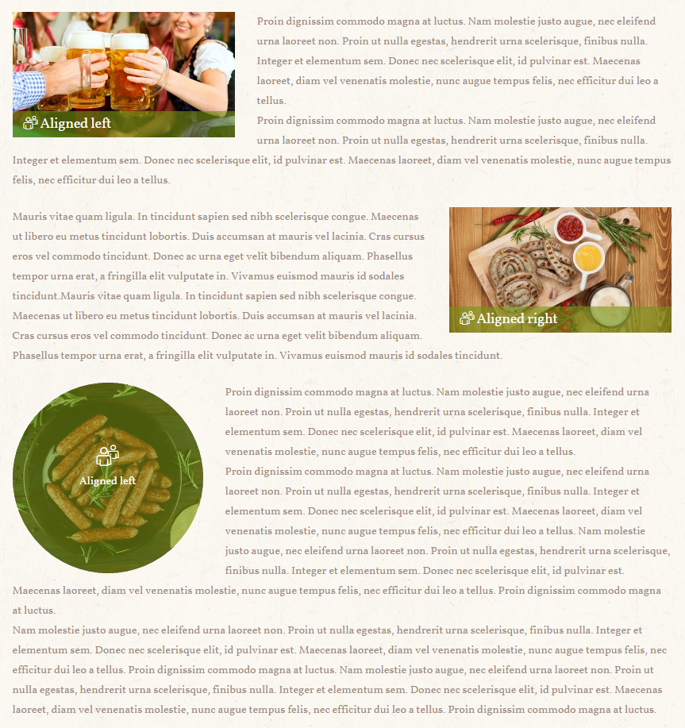
Image alignment can be changed by adding one of the values (alignleft/alignright) into the <figure class=> tag:
<figure class="sc_image alignright sc_image_shape_square sc_image_none">
<img src="images/Depositphotos_45022533_original-280x158.jpg" alt="">
<figcaption>
<span class="icon-users-2"></span>
Aligned right
</figcaption>
</figure>
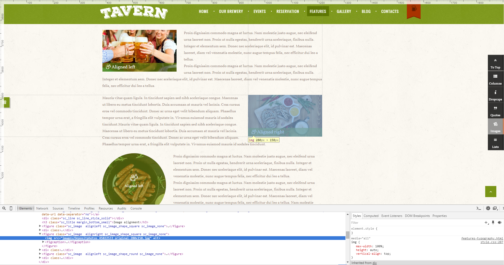
Highlight
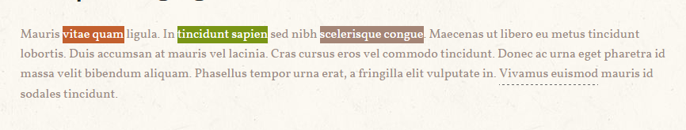To highlight an element add one of the values below into the <span class=> tag:
<span class="sc_highlight sc_highlight_style_2">tincidunt sapien</span>
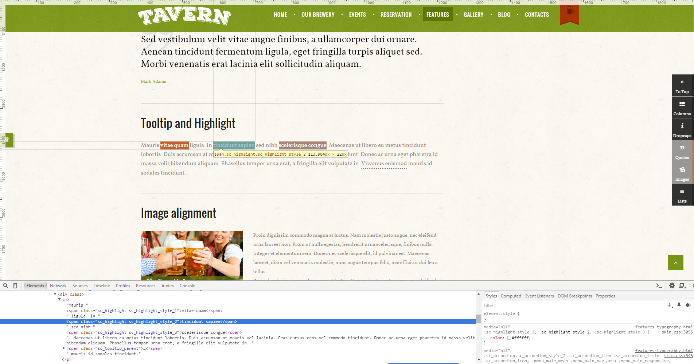
Skills
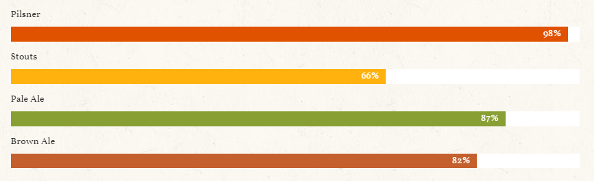
You can customize the skills bar by changing width and data-ed values as well as their styles.
<div class="sc_skills_item sc_skills_style_1 inited">
<div class="sc_skills_count color_3" style="width: 87%;">
<div class="sc_skills_total" data-start="0" data-stop="87" data-step="1" data-max="100" data-speed="27" data-duration="2349" data-ed="%">87%</div>
</div>
</div>
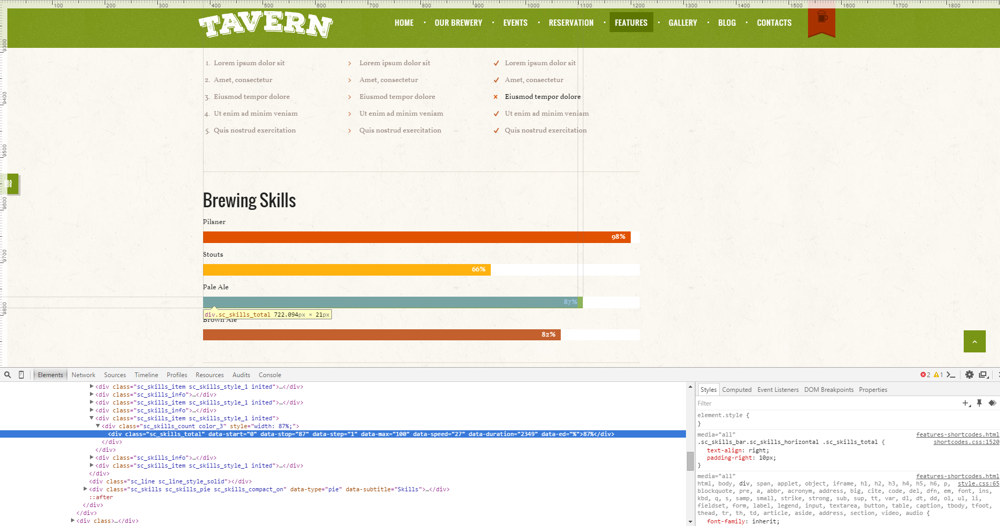
Contact form
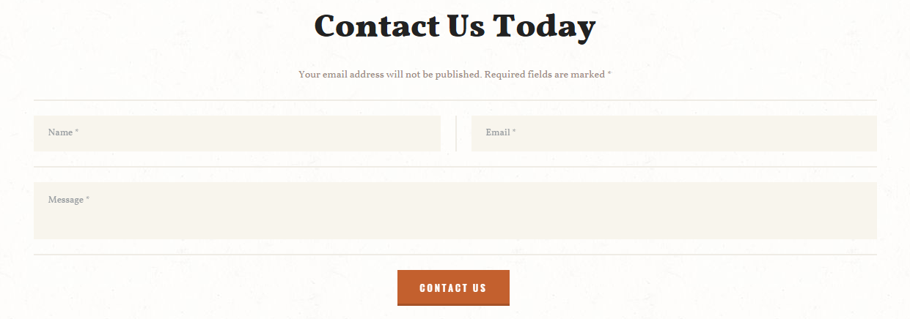
Below are thes file responsible for contact form functionality:
root directory.../include/contact-form.php
root directory.../js/custom/_form_contact.js
Your email address should be specified in the contact-form.php file. See the code below.
$your_email = 'your@email.net';
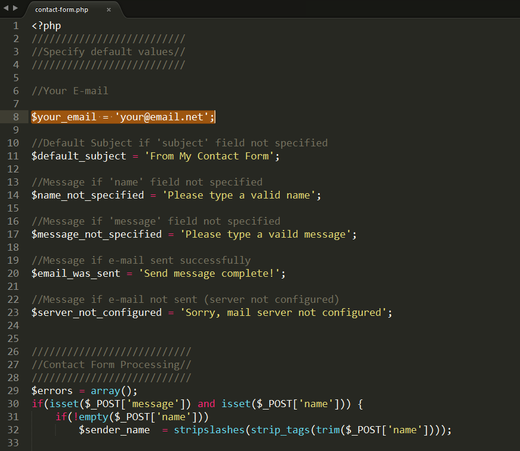Google map
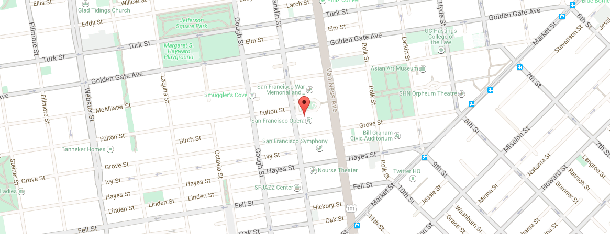
Files responsible for Google map functionality:
root directory.../js/custom/core.googlemap.js
root directory.../js/shortcodes.js
root directory.../contact-us.html
Address/coordinates should be specified in the
contact-us.html file. It also depends on what Google map you are going to use. Find the id below.
class="sc_googlemap sc_googlemap_style_1"
<div id="sc_googlemap_1609758127" class="sc_googlemap sc_googlemap_style_1" data-address="San Francisco, CA 94102, US" data-description="San Francisco, CA 94102, US" data-latlng="" data-zoom="16" data-style="style2" data-point=""></div>
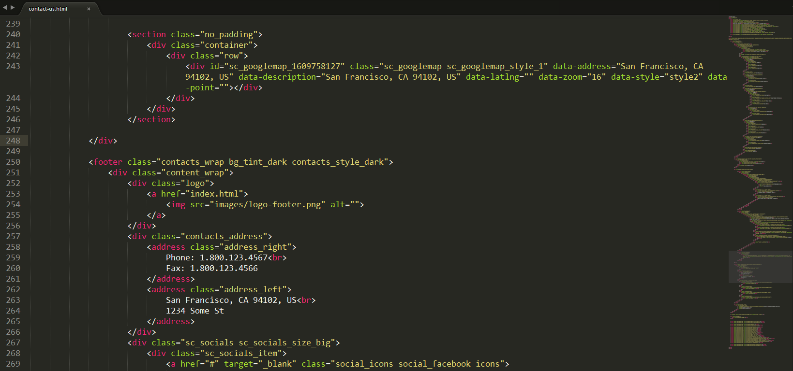Revolution Slider

Files responsible for the Revolution Slider functionality can be found in the root directory.../js/vendor/revslider/rs-plugin/... folder.
Check the index.html file for more information.
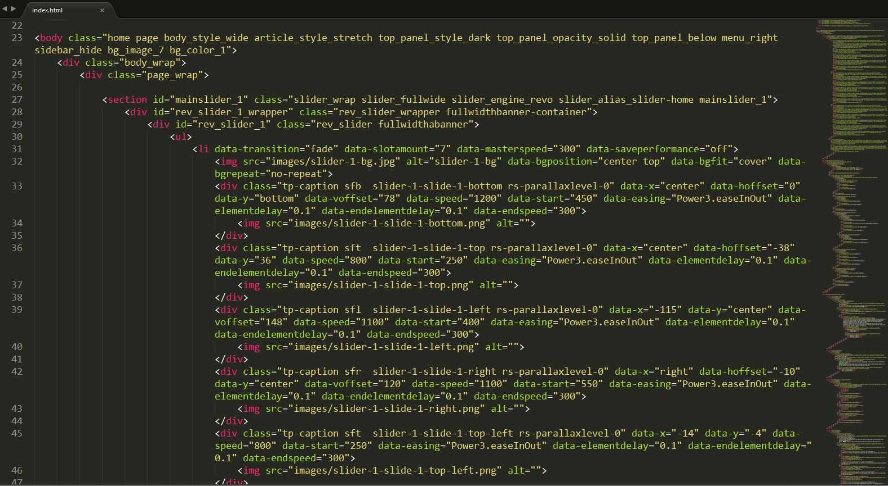Swiper Slider
Files responsible for the Swiper Slider functionality can be found in the root directory.../js/vendor/swiper/... folder.
Check the features-shortcodes.html file for more information.
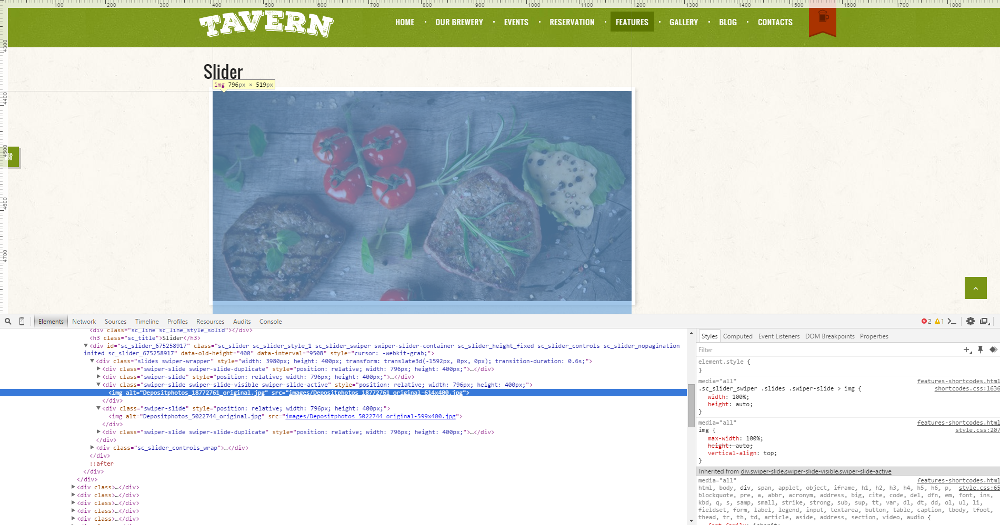TOC
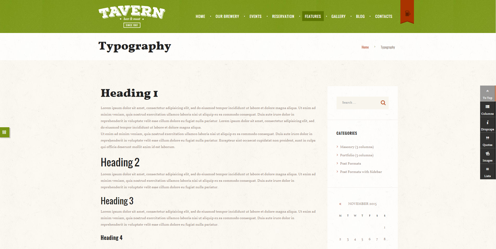Check the features-typography.html file for more information.
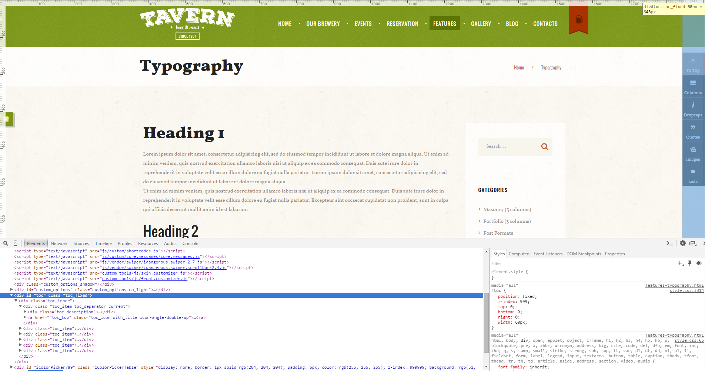Countdown Counter

Files responsible for both Countdown counters (Home 1 page) functionality can be found in the root directory.../js/vendor/countdown/... folder.
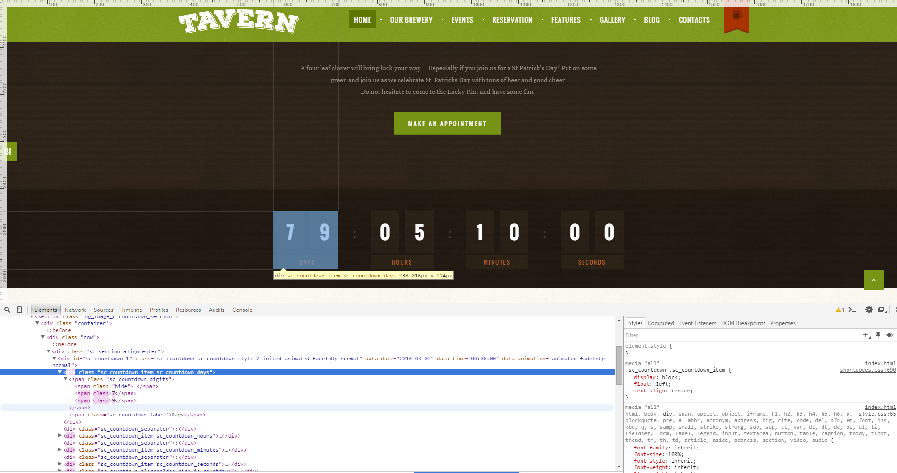PSD Files
All the related .PSD files can be found in the theme's archive. Otherwise you can always request them by contacting our support team.
Sources and Credits
In this section you can find an additional information regarding fonts and clipart used in this theme.
-
Fonts:
- Check the style.css file for more information.
- Fontello (non standard, icons set). Specified in every .html file.
-
Clipart:
- Images were taken from here.
PLEASE NOTE! All the images used in this theme are the property of their respective owners and should be purchased separately.
Support
We are happy that you are one of our customers and we assure you won't be disappointed. If you come up with any questions that are beyond the scope of this help file, feel free to post them on our support forum at https://axiomthemes.ticksy.com/.
We are open from 10am to 7pm (CET), from Monday till Friday.
PLEASE NOTE!
Our support covers getting setup, troubles with using any of the features and any bug fixes.
Unfortunately, we cannot provide support for customizations or 3rd party plugins. If you need help
with customizations of your theme, then you should enlist the help of a developer.
How to find a purchase key (check the screenshot):
{kind=link}
- Log in to your themeForest account.
- Click on the "Downloads" tab.
- Find our theme in the products list.
- Click the "Download" button and select "License certificate & purchase code" in the drop down menu.
Social icons
To add a link to your social icon paste the necessary URL into the <a href=> tag. See the example below:
<a href="#" target="_blank" class="social_icons social_facebook icons"> <span class="icon-facebook"> </span> </a>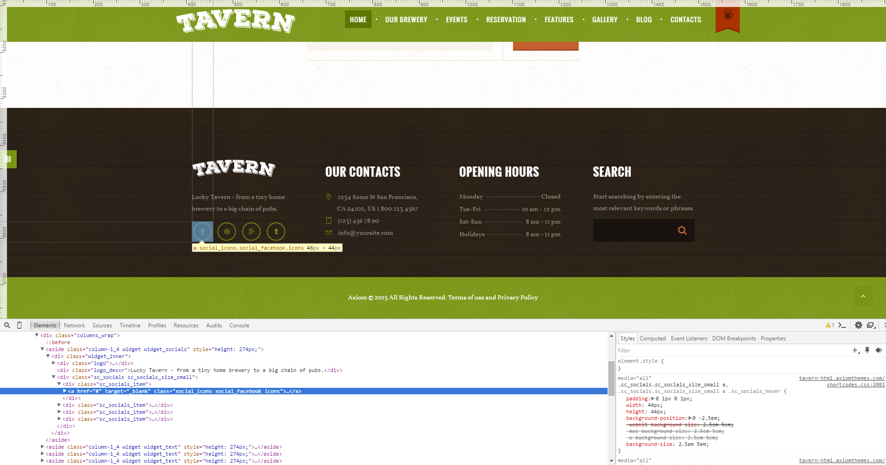